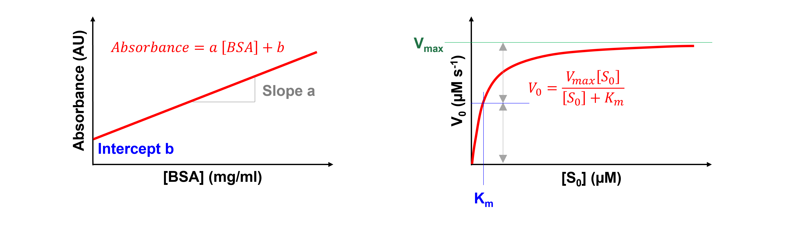
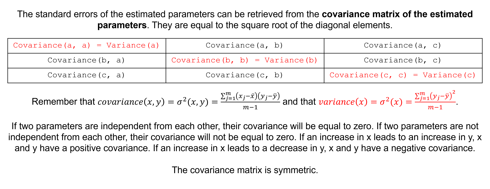

SciPy For Data Fitting#
Models and parameters#
The goal of (non)linear regression is to fit a model to our data. A model is usually a mathematical function, describing the relationship between different physical quantities. Fitting a model produces estimates for the model parameters, which often have a biological meaning and are thus of interest.
One example is a standard curve in a colorimetric assay, which describes the absorbance at a specific wavelength at a given standard protein, e.g. BSA, concentration. Here, \([BSA]\) is the independent variable, the absorbance at a specific wavelength the dependent variable, and a and b the model parameters.
Another example is the Michaelis-Menten equation, which describes the initial reaction rate, \(V_{0}\), at a given substrate concentration, \([S_{0}]\), for a system that follows \(E + S\) \(\rightleftharpoons\) \(ES\) \(\rightarrow\) \(E + P\) (with E = enzyme, S = substrate, and P = product). Here, \([S_{0}]\) is the independent variable, \(V_{0}\) the dependent variable, and \(V_{max}\) and \(K_m\) the model parameters.
{kind=link}
Of note, a model is said to be linear when the dependent variable is linear with each model parameter. If the model is not linear, then it is nonlinear. Our first example, the standard curve in a colorimetric assay, is a linear model. Our second example, the Michaelis-Menten equation, is a nonlinear model.
Least squares fitting#
For curve fitting, we use the scipy.optimize.curve_fit command. It can be used for multiple relationships - not just straight lines and polynomials! - between two sets of data. It uses least squares to fit a function, which we define, to data. It simply minimises the sum of the squares between the data point \(y_{i,observed}\) and the fit point \(f(x_{i}) = y_{i,predicted}\):
{kind=link}
Unweighted and weighted fits#
It can be used for data with and without errors. For a normal or unweighted least squares fit, it assumes the errors on the data points are all the same and therefore play no role in the fitting procedure. A weighted fit does depend on the uncertainties on each point. To take weights, \(w_{i}\) (very often non-uniform sample standard deviations, \(\sigma_{i}\)) into account we use:
Remember, the mean, \(\overline {y_{i,observed}}\) is:
The standard deviation, \(\sigma\), is the square root of the sample variance:
Where
\(j\) indexes the data set,
\(y_{j,observed}\) are the individual results,
\(n\) is the number of data sets,
\(n-1\) is called the degrees of freedom.
Please see AMC TB 27-2007, Why are we weighting?, available here for more information on weighted fits.
The scipy.optimize.curve_fit() function, fit parameters, and standard errors of the fit parameters#
The scipy.optimize.curve_fit(f, xdata, ydata, p0, sigma, absolute_sigma) function has many arguments. Important are f to define the model function, xdata and ydata for the independent and dependent variables, and p0 for the initial guesses for the model parameters.
The argument sigma, by default None, can be used to define the sample standard deviations. When working with uncertainties, we need to change the argument absolute_sigma from its default False to True. It relates to all values in sigma being the standard deviations and not just relative weights for the data points.
The function returns the optimal values for the model parameters (params, the order as defined by the function) and the covariance matrix (params_covariance, the order as defined by the function).
This covariance matrix can be used to calculate standard errors of the fit parameters. To compute one standard deviation errors on the fit parameters use the numpy.sqrt and numpy.diag functions from NumPy.
{kind=link}
Steps#
The steps for curve fitting are:
Import the
optimizemodule with thecurve_fitfunction from the SciPy library.Create the (x,y) data, either as NumPy arrays or a Pandas DataFrame.
Define a function for the model we want to fit. The function should accept as inputs the independent variable(s) and all the model parameters to be fit.
Use the
scipy.optimize.curve_fit(f, xdata, ydata, p0, sigma, absolute_sigma)function to fit the data.Extract the fit parameters and standard errors on the fit parameters from the output.
Inspect the x,y data and fit on a graph.
Calculate and inspect the residuals, i.e. \(y_{i,observed} - y_{i,predicted}\), on a graph.
Please, look at the “Curve fitting in Python with curve_fit” from Brant Carlson YouTube video about curve fitting in Python for more information and an example. It includes:
computing \(χ^2\) when having uncertainties (at ~ 6 minutes),
using curve_fit (at ~ 14 minutes),
plotting the results and residuals (at ~ 19 minutes), and
interpreting curve_fit’s covariance matrix (at ~ 30 minutes).
Exercise 35
Import the optimize module with the curve_fit function from the SciPy library. Use convenient naming.
Solution to Exercise 35
from scipy.optimize import curve_fit
Exercise 36
The following (x,y) data represent a BCA colorimetric assay standard curve. BSA concentrations are given in mg/ml and absorbances at 562 nm in AU.
BSAconc = np.array([0, 0.125, 0.250, 0.500, 0.750, 1.00, 1.50, 2.00])
A562nm = np.array([-0.056333, 0.081000, 0.239667, 0.512333, 0.731667, 1.047000, 1.565000, 2.016667])
We first define the function to fit the data using
def funcline(x, a, b): #create the function to return a line
y = a * x + b
return y
We now fit the data using
paramsSC, params_covarianceSC = curve_fit(funcline, #the function we try to fit to the data
BSAconc, #the x values, the concentrations
df0['BSA-mean'], #the y values, the measured absorbances
(1, 0.1)) #the starting parameters for a (=the slope) and b (=the intercept)
We now extract the fit parameters and calculate the standard error of the fit parameters using
print("Slope, a = ", paramsSC[0], "±", np.sqrt(np.diag(params_covarianceSC))[0]) #print the slope and standard error on the slope
print("Intercept, b = ", paramsSC[1], "±", np.sqrt(np.diag(params_covarianceSC))[1]) #print the intercept and standard error on the intercept
It is up to you to
inspect the x,y data and fit on a graph, and
calculate and inspect the residuals on a graph.
Solution to Exercise 36
Here’s one possible solution.
#inspect the x,y data and fit on a graph
plt.figure(figsize=(7,5)) #start a figure object
plt.plot(BSAconc, A562nm, #plot a set of x (=the concentrations),y (= the measured absorbances) data points
marker='o', color='red', markersize=8, linestyle='None', #use a round, red marker with size 8 but use no line
label='Data') #use a label for the legend
plt.plot(BSAconc, funcline(BSAconc, *paramsSC), #plot a set of x (=the concentrations),y (= the calculated absorbances using the fit parameters (the star unpacks the *paramsSC array) data points
marker='None', linestyle='solid', color='gray', #use no marker but use a solid, gray line
label='Fit') #use a label for the legend
plt.title('Standard Curve', fontsize=18) #title of graph
plt.xlabel('$[BSA]$ ($mg ml^{-1}$)', fontsize=14) #X-axis label
plt.ylabel('A562nm (AU)', fontsize=14) #Y-axis label
plt.legend() #include a legend
plt.show() #show the figure object
#calculate the residuals
residSC = A562nm - funcline(BSAconc, *paramsSC) #calculate the residuals
#inspect the residuals on a graph
plt.figure(figsize=(7,5)) #start a figure object
plt.plot(BSAconc, residSC, #plot a set of x (=the concentrations),y (= the residuals) data points
marker='o', color='black', markersize=8, #use a round, black marker with size 8
linestyle='solid') #use a solid line
plt.title('Residuals', fontsize=18) #title of graph
plt.xlabel('$[BSA]$ ($mg ml^{-1}$)', fontsize=14) #X-axis label
plt.ylabel('A562nm (AU)', fontsize=14) #Y-axis label
plt.axhline(y=0, color='gray', linestyle='dashed') #add a gray, dashed horizontal line across y=0
plt.show() #show the figure object
Exercise 37
For the data and data analysis from the previous exercise, produce a combined figure showing the residuals plot underneath the main plot. Make sure they are aligned and have the same X-axis so we can see which residual corresponds to which data point.
Tip: Many functions can be used. Have a look at matplotlib.pyplot.subplots, matplotlib.figure.figure.add_subplot, or matplotlib.figure.figure.add_axes.
Solution to Exercise 37
Here’s one possible solution.
fig = plt.figure() #to create a figure object
xlimits = [-0.2, 2.2] #to make sure we use the same of the X-axis boundaries for both plots
ax1 = fig.add_axes([0.1, 0.51, 1, 0.8]) #to specify the coordinates, width and height of the top plot
ax2 = fig.add_axes([0.1, 0.1, 1, 0.4]) #to specify the coordinates, width and height of the bottom plot
ax1.plot(BSAconc, A562nm, #plot a set of x (=the concentrations),y (= the measured absorbances) data points
marker='o', color='black', markersize=8, linestyle='None', #use a round, black marker with size 8 but use no line
label='Data') #use a label for the legend
ax1.plot(BSAconc, funcline(BSAconc, *paramsSC), #plot a set of x (=the concentrations),y (= the calculated absorbances using the fit parameters (the star unpacks the *paramsSC array) data points
marker='None', linestyle='solid', color='gray', #use no marker but use a solid, gray line
label='Fit') #use a label for the legend
ax1.axhline(0, color='gray', linestyle="--") #adds a horizontal line at y=0
ax1.axis(xlimits + [-0.2, 2.2]) #sets the X-axis and Y-axis boundaries for the top plot
ax1.tick_params(axis='x', bottom=False, labelbottom=False) #removes the ticks and tick labels on the X-axis for the top plot
ax1.set_ylabel('A562nm (AU)') #adds Y-axis title for the top plot
ax1.legend(loc='upper left') #include legend
ax2.plot(BSAconc, residSC, #plot a set of x (=the concentrations),y (= the residuals) data points
marker='o', color='gray', linestyle='solid', markersize=8) #use gray datapoints size 8 and a line
ax2.axhline(0, color='gray', linestyle="--") #adds a horizontal line at y=0
ax2.axis(xlimits + [-0.08,0.08]) #sets the X-axis and Y-axis boundaries for the bottom plot
ax2.set_xlabel('$[BSA]$ ($mg$ $ml^{-1}$)') #adds X-axis title for the bottom plot, which is the same for the top plot
ax2.set_ylabel('Residuals') #adds Y-axis title for the bottom plot
plt.show() #show the figure object
Linear regression#
Of note, other functions for linear regression exist:
The scipy.stats.linregress function calculates the analytical solution. This function is more computationally efficient and the result doesn’t depend on e.g. starting estimates.
The numpy.polyfit function is used for a least squares polynomial fit. The newer numpy.polynomial.polynomial.polyfit is preferred though. These functions facilitates the coding part (no need to define the function). Also, no starting estimates are needed.
…